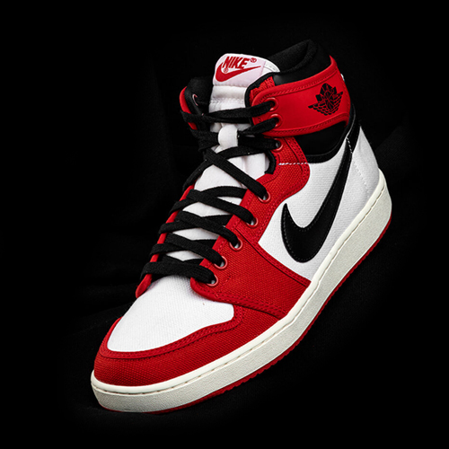

JUST DO IT
ПРОСТО СДЕЛАЙ ЭТО
Взяв за основу характерное для расцветок Air Jordan 1 сочетание — красный, чёрный и белый — Jordan Brand подчеркнул его двухслойной конструкцией. Края нижних красных деталей выступают из-под чёрных, придавая силуэту новый и в то же время знакомый образ. Верхняя часть полностью сделана из кожи, логотип Jordan Wings нанесён тиснением возле горловины, а вопрос, который Майкл Джордан задаёт в рекламе, можно увидеть на стельках. Завершают образ ещё несколько красных акцентов — шнурки, брендинг на язычке и подмётка.
